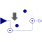

SubSampleSub-sample the clocked Real input signal and provide it as clocked output signal |

|
Information
This information is part of the Modelica Standard Library maintained by the Modelica Association.
This block sub-samples the clocked Real input signal u and provides it as clocked output signal y.
To be more precise: The clock of y is factor-times slower than the clock of u. At every factor ticks of the clock of u, the output y returns the value of u. The first activation of the clock of y coincides with the first activation of the clock of u. By default, the sub-sampling factor is inferred, that is, it must be defined somewhere else. If parameter inferFactor = false, then the sub-sampling factor is defined by Integer parameter factor.
Example
The following
example
samples a sine signal with a periodic clock of 20 ms period, and
then sub-samples the resulting clocked signal with a factor of 3:
 |
 |
|
| model | simulation result |
As can be seen, subSample.y picks every third-value of sample.y due to the sub-sampling, and the sub-sampling factor = 3 is displayed in the icon of the subSample block. Note the down-arrow in the icon of the subSample block indicates that the clock of subSample.y is slower as the clock of subSample.u.
Parameters (2)
| inferFactor |
Value: true Type: Boolean Description: = true, if sub-sampling factor is inferred |
|---|---|
| factor |
Value: 1 Type: Integer Description: Sub-sampling factor >= 1 (ignored if inferFactor=true) |
Connectors (2)
| u |
Type: RealInput Description: Connector of clocked, Real input signal |
|
|---|---|---|
| y |
Type: RealOutput Description: Connector of clocked, Real output signal (clock of y is slower as clock of u) |
Used in Examples (1)
|
Modelica.Clocked.Examples.Elementary.RealSignals Example of a SubSample block for Real signals |